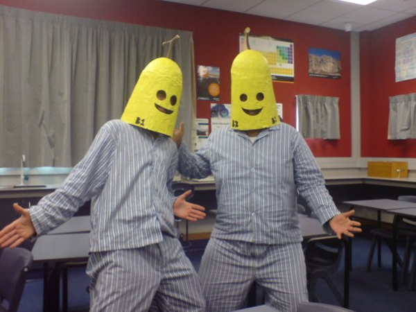
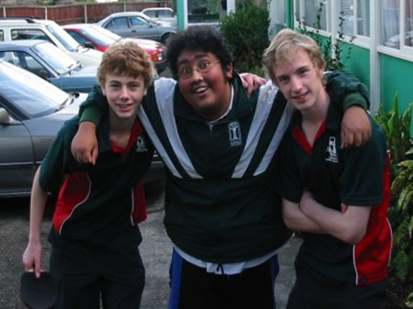
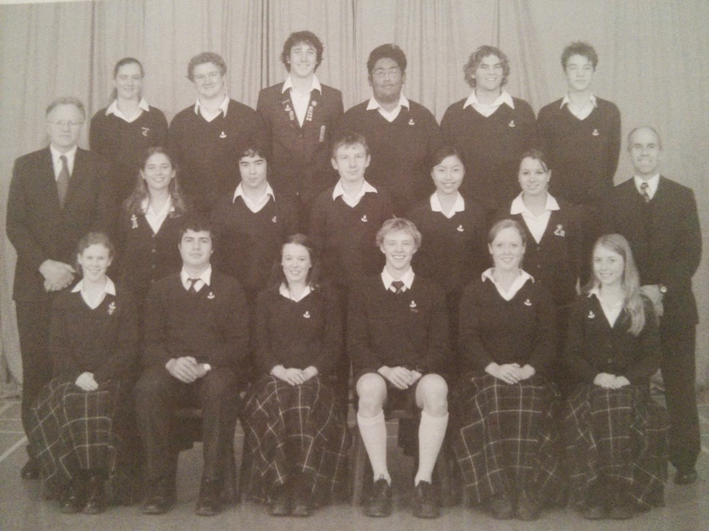
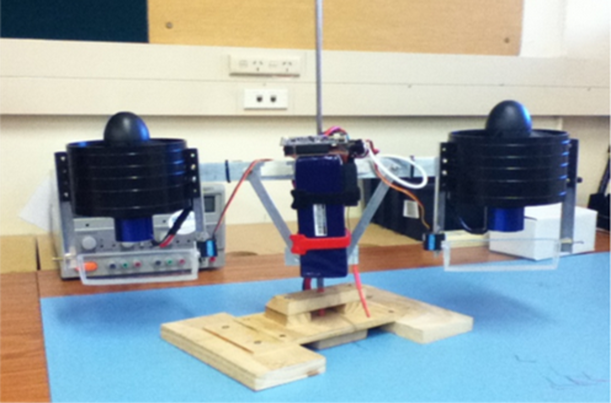
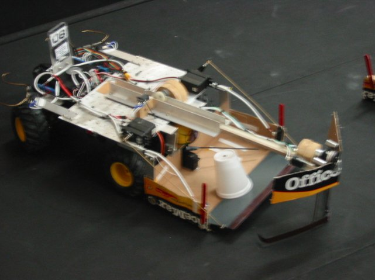
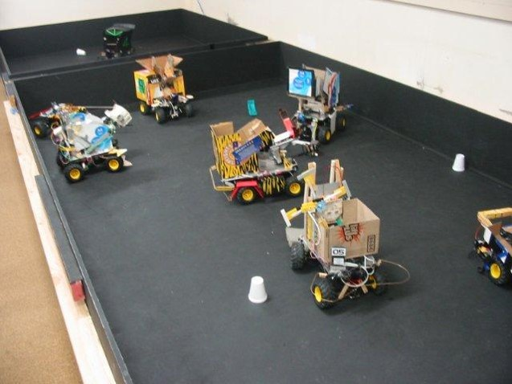

Systems Engineering
Devatanu Deka


What we do
 Powered Wheelchairs |
 Mobility Scooters |
Controllers for Powered Wheelchairs and Mobility Scooters
About Me
Why I became an engineer?
Burnside High School
- Physics, Chemistry, Maths
- Electronics, Programming
- Table Tennis, Cricket
- Divisional Prefect
  
University of Canterbury
- Bachelor of Engineering
- Mechatronics
- Software, Hardware, Mechanical
  
What Engineers do...
Investigate
Design
Build
Test
What do engineers design, build and test?
Infrastructure
- Roads
- Traffic Management
- Cities
Power Grid
- Generation
- Distribution
- Transmission
Software Applications
- Games
- Word Processors, Spreadsheet, Slideshow
- Music Streaming
Products and Devices
- Cell phones
- Cars
- Powered Wheelchairs
What is involved in making a product?
What products or features do customers want?
Product Managers
What can we actually make?
What is realistic?
How would we make it?
Mechanical Engineer
Materials
Shape
Hardware Engineer
Components
Circuits
Power
Software Engineer
Software design
Write software
Role of a Systems Engineer
Bridge between the different departments
Look at overall design and behaviour of system
What is a System?
Role of a Systems Engineer
Bridge between the different departments
Look at overall design and behaviour of system
System Architecture
Work closely with Marketing and Software Engineers
to develop new system behaviour
Requirements Capture
- Use Cases
- Define expected behaviour
- Drive design of other engineering departments
Conceptual Design
- Research feature
- Prototype
- Initial Software Design
Risk Analysis
- Before products are made
- What behaviours can be harmful?
- How to prevent harm from coming to users?
- Losing wheelchair control
- Fire or electrical shock
Testing
- After products are made
- Do our chairs do what we want it to do?
- Is it safe?
To be a systems engineer
- Good communication skills - verbal, written, visual
- Broad range of problem solving skills involve all departments - Mechanical, Electronics, Software
- Ability to multitask and adapt to changes quickly
- Science subjects -
Maths, Physics, Chemistry, Electronics, Programming
Why be a
systems engineer
- Variety of tasks
- Lots to learn
- System wide view
- Understand why we are making
the products or systems